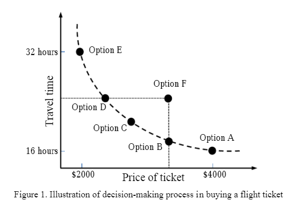

Fitness Function¶
Fitness class also redefines the relational operator in order to handle different types of optimization (eg. maximization, minimization) and to provide limited support to more complex scenarios (eg. multi-objective optimization).
How do we handle a different scenario¶
When subclassing, one’s fitness should only redefine ‘is_fitter’, and optionally ‘is_distinguishable’ and ‘is_dominant’; ‘is_dominant’ must be changed if ‘is_fitter’ is randomized (the result is uncertain).
The idea of several, different scenarios is the following:
`a == b`
In this case, fitness a cannot be distinguished from fitness b.
`a != b`
In this case, fitness a is distinguishable from fitness b.
`a > b`
In this case, fitness a is fitter than fitness b.
(may not always be the case, see lexicographic)
`a >= b`
In this case, fitness a is fitter or not distinguishable from fitness b.
`a < b`
In this case, fitness b is fitter than fitness a, respectively.
(may not always be the case, see lexicographic)
`a <= b`
In this case, fitness b is fitter or not distinguishable from fitness a, respectively.
`a >> b`
In this case, fitness a dominates fitness b which is a certain case.
`a << b`
In this case, fitness a is dominated by fitness b, accordingly.
Multi-Objective Evolutionary Algorithm¶
The problem becomes more interesting in case that there exist more than one characteristic that should be compared in order to decide which individual is “better”. It is very important to find rules that describe characteristics with respect to a property of interest. The MOEA approach, a method of combining the traditional genetic algorithm (TGA) with the multi-objective method, can consider the relation between the parameters and the objective spaces in the same time then explore the optimum solution. Our multi-objective evolutionary algorithm uses a ‘helper’ function which can decide the best individual when there are two comparable characteristics.
This special Multi-Objective scenario can be illustrated with an airplaine ticket purchase. Let us consider the example of buying a flight ticket where the price of ticket and travel time are the decision-making criteria.
{kind=link}
The points A,B,C,D,E and F represent the options for flying between two cities. We assume that difference in travel time is due to the waiting time for connecting flight at transit. Option A is the most expensive with ticket price of $4000, but with least travel time of 16 hours. The cheapest ticket is of $2000 with travel time of 32 hours if one takes flying Option E. Here the decision-making process of flight booking is not a single objective of either price or travel time. The traveler has few options to choose from with some trade-off between travel time and price. If one selects Option B instead of Option A, he will be saving on his ticket price by spending more time on transit. Again, if the traveler selects Option D instead of Option E, he has to sell out more money for buying the ticket, but he can save a few hours. If someone chooses Option F, he is definitely losing. He can go for Option B at same price with less travel time, or Option D of same travel duration at lower price. The points A,B,C,D and E are called Pareto Optimal Points, named after the famous Italian economist Vilfredo Pareto. They are also called Non-Dominated solutions. The example of flight options is for a two-objective optimization. In multi-objective optimization there can be more than two objectives.